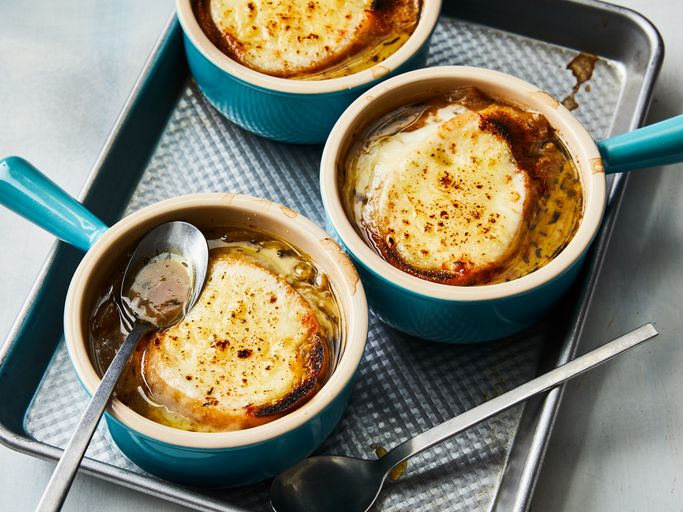
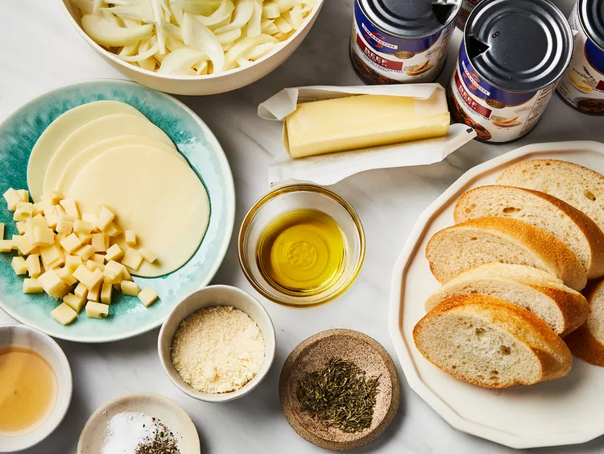
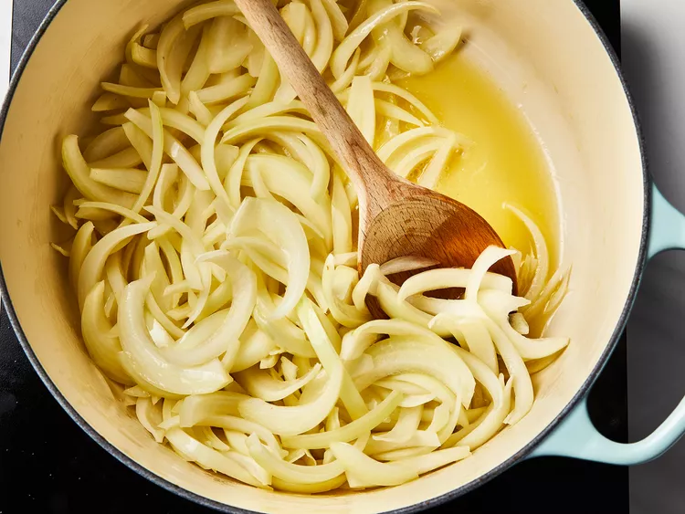
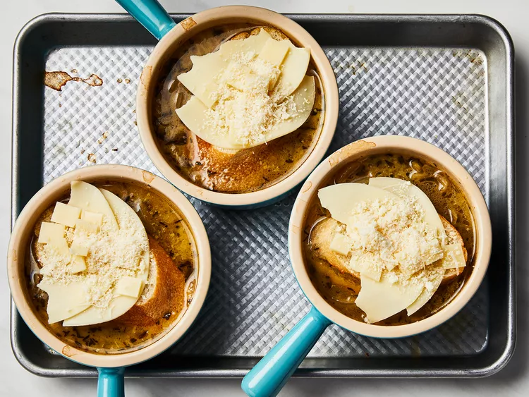
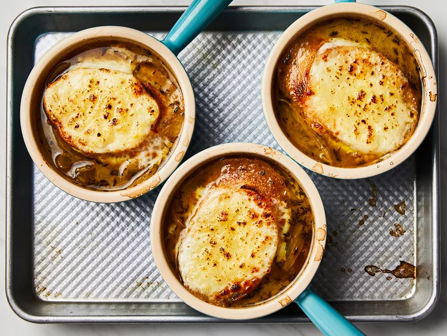

Simple French Onion Soup

What is French Onion Soup?
French onion soup, or soupe à l'oignon gratinée, is a classic French dish made with caramelized onions and beef
stock or broth. The soup is topped with bread and cheese, then gratinéed to rich, gooey perfection. It's
traditionally served in a ramekin or a ceramic crock with a handle.
Ingredients
- ½ cup unsalted butter
- 2 tablespoons olive oil
- 4 cups sliced onions
- 5 cups beef broth
- 2 tablespoons dry sherry
- 1 teaspoon dried thyme
- 1 pinch salt and pepper to taste
- 4 slices French bread
- 4 slices provolone cheese
- 2 slices Swiss cheese, diced
- ¼ cup grated Parmesan cheese
Directions
- Gather all ingredients.

- Melt butter with olive oil in an 8-quart stock pot over medium heat. Add onions to butter and continually
stir until tender and translucent. Do not brown the onions.

- Add beef broth, sherry, and thyme. Season with salt and pepper. Let simmer for 30 minutes.

- Meanwhile, preheat the oven's broiler.
- Ladle soup into oven-safe serving bowls and place one slice of bread on top of each (bread may be broken
into pieces if you prefer). Layer each slice of bread with a slice of provolone, 1/2 slice diced Swiss and 1
tablespoon Parmesan cheese.

- Place bowls on a cookie sheet and broil in the preheated oven until cheese bubbles and browns slightly, 2 to
3 minutes.

- Serve hot and enjoy!